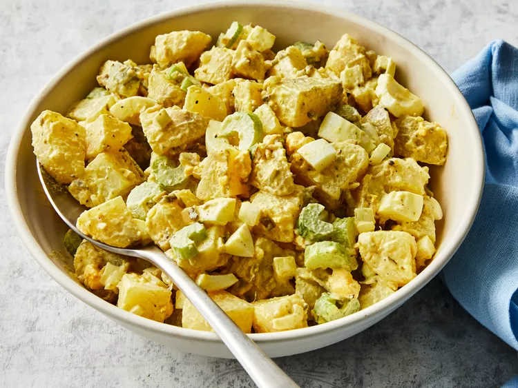

Home
World's Best Lasagna

Description
The best potato salads are a balance of flavors and textures, where creamy, tangy, sweet, salty, tender, and crunchy meet in perfect harmony. Here are the ingredients for this top-rated potato salad recipe:
Potatoes
Eggs
Celery
Onion
Relish
Mayonnaise
Mustard
Seasonings
Directions
- Gather all ingredients.
- Bring a large pot of salted water to a boil. Add potatoes and cook until tender but still firm, about 15 minutes.
- Drain, cool, peel, and chop potatoes.
- While potatoes cook, place eggs in a saucepan and cover with cold water. Bring water to a boil; cover, remove from heat, and let eggs stand in hot water for 10 to 12 minutes.
- Remove from hot water, cool, peel, and chop eggs.
- Combine the potatoes, eggs, celery, onion, relish, mayonnaise, mustard, garlic salt, celery salt, and pepper in a large bowl. Mix together well and refrigerate until chilled.
- Enjoy!
Recipe source: Allrecipes